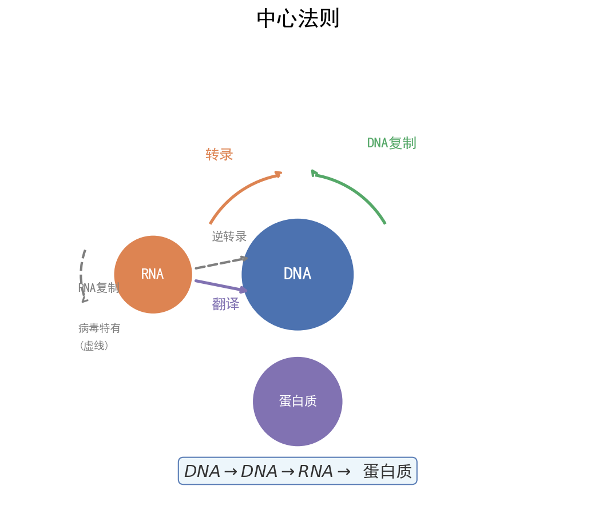

核心内容
关键概念
一、基因工程工具
| 工具 | 来源 | 功能 | 特点/注意 |
|---|---|---|---|
| 限制性内切核酸酶（限制酶） | 主要从原核生物中分离 | 识别特定核苷酸序列，在特定部位切割DNA | 切割后产生黏性末端或平末端；一种限制酶识别一种特定序列 |
| DNA连接酶 | 大肠杆菌、T4噬菌体 | 连接双链DNA片段，恢复磷酸二酯键 | E·coli DNA连接酶：黏性末端；T4 DNA连接酶：黏性/平末端 |
| 载体（质粒） | 细菌、酵母菌 | 将外源基因导入受体细胞 | 必备条件：①复制原点 ②标记基因 ③多克隆位点 ④对宿主无害 |
⚠️ 限制酶不切割自身DNA的原因：原核生物细胞内的限制酶与甲基化酶配合，自身DNA相应位点被甲基化修饰，避免被切割。
二、基因工程基本步骤
获取目的基因 → 构建基因表达载体 → 导入受体细胞 → 筛选与检测
步骤1：获取目的基因
| 方法 | 适用场景 | 特点 |
|---|---|---|
| 从基因文库获取 | 已知部分序列 | 基因组文库含全部基因；cDNA文库只含表达的基因（无内含子） |
| PCR扩增 | 已知目的基因两端序列 | 体外快速扩增，需设计引物 |
| 人工合成 | 基因较小、序列已知 | 化学合成法；真核基因可用反转录法（先mRNA→cDNA） |
步骤2：构建基因表达载体（核心步骤）
目的基因 + 启动子 + 终止子 + 标记基因 + 复制原点 → 重组质粒
| 组件 | 功能 |
|---|---|
| 启动子 | RNA聚合酶识别和结合部位，驱动基因转录 |
| 终止子 | 终止转录 |
| 目的基因 | 需要表达的基因 |
| 标记基因 | 便于筛选含目的基因的受体细胞（如抗生素抗性基因） |
| 复制原点 | 使质粒能在宿主细胞中自我复制 |
⚠️ 启动子 ≠ 起始密码子：启动子是DNA上的调控序列；起始密码子是mRNA上翻译开始的信号。
步骤3：导入受体细胞
| 受体细胞 | 导入方法 | 关键条件 |
|---|---|---|
| 植物细胞 | 农杆菌转化法（最常用）、基因枪法、花粉管通道法 | 农杆菌Ti质粒上的T-DNA可转移并整合到植物染色体DNA |
| 动物细胞 | 显微注射法（受精卵） | 导入受精卵，全能性高 |
| 微生物细胞 | Ca²⁺处理法（感受态细胞） | 用CaCl₂处理大肠杆菌，增加细胞膜通透性 |
步骤4：筛选与检测
| 检测层次 | 方法 | 检测目标 |
|---|---|---|
| 分子水平（DNA） | DNA分子杂交（PCR/探针） | 目的基因是否导入 |
| 分子水平（mRNA） | 分子杂交 | 目的基因是否转录 |
| 分子水平（蛋白质） | 抗原-抗体杂交 | 目的基因是否翻译 |
| 个体水平 | 抗虫/抗病接种实验 | 目的基因是否发挥功能 |
检测顺序：先确认导入（DNA水平）→再确认表达（蛋白质水平）→最后功能验证（个体水平）
三、PCR技术
PCR = 体外DNA扩增技术（聚合酶链式反应）
三个步骤循环（每个循环约30次）：
| 步骤 | 温度 | 作用 | 说明 |
|---|---|---|---|
| 变性 | 90~95℃ | 双链DNA解开为单链 | 高温破坏氢键，无需解旋酶 |
| 复性（退火） | 55~60℃ | 引物与单链DNA互补结合 | 引物决定扩增的特异性 |
| 延伸 | 70~75℃ | Taq DNA聚合酶催化DNA链延伸 | 从引物3'端开始延伸 |
Taq DNA聚合酶：热稳定DNA聚合酶，从嗜热菌中分离，耐高温。
PCR引物设计要点：
- 两种引物分别与目的基因两条链的3'端互补
- 引物之间不能互补配对（避免形成引物二聚体）
- 引物长度通常为20~30个核苷酸
四、基因工程应用
| 领域 | 应用实例 |
|---|---|
| 农业 | 抗虫棉（Bt毒蛋白基因）、抗除草剂大豆、黄金大米 |
| 医药 | 重组人胰岛素、干扰素、乙肝疫苗、单克隆抗体 |
| 环保 | 分解石油的"超级细菌"、净化重金属的转基因植物 |
| 基因诊断 | DNA探针检测遗传病、基因芯片 |
| 基因治疗 | 将正常基因导入患者体内（如SCID治疗） |
广东产业关联：深圳华大基因（基因测序）、广州生物岛（生物医药）、珠海丽珠医药等，是广东卷情境化命题的常用素材。
五、细胞工程
植物组织培养
原理：植物细胞的全能性
外植体 → 脱分化 → 愈伤组织 → 再分化 → 胚状体/丛芽 → 完整植株
↑ ↑
形成愈伤 形成根/芽
（无定形） （再分化）
| 技术 | 原理 | 应用 |
|---|---|---|
| 植物体细胞杂交 | 细胞膜的流动性 + 植物细胞全能性 | 克服远缘杂交不亲和障碍（如番茄-马铃薯） |
| 微型繁殖（快速繁殖） | 细胞全能性 | 高效繁殖优良品种 |
| 作物脱毒 | 茎尖病毒极少 | 获得脱毒苗（如脱毒马铃薯） |
| 单倍体育种 | 花药离体培养 + 秋水仙素加倍 | 快速获得纯合子，缩短育种年限 |
植物体细胞杂交步骤：①去壁（纤维素酶+果胶酶）→②原生质体融合（PEG诱导/电激）→③筛选杂种细胞→④组织培养
动物细胞培养
| 条件 | 具体要求 |
|---|---|
| 营养 | 糖、氨基酸、无机盐、维生素 + 血清（含未知生长因子） |
| 环境 | 无菌无毒、适宜温度（36.5±0.5℃）、pH（7.2~7.4）、气体（95%空气+5%CO₂） |
| CO₂作用 | 维持培养液pH |
动物细胞培养过程：原代培养（1~10代）→传代培养（10~50代）→细胞系（遗传物质改变，可无限传代）
动物细胞融合与单克隆抗体
B淋巴细胞（能产生特异性抗体，但不能无限增殖）
+
骨髓瘤细胞（能无限增殖，但不能产生抗体）
↓
灭活病毒/PEG/电激诱导融合
↓
杂交瘤细胞（既能无限增殖，又能产生特异性抗体）
单克隆抗体优点：特异性强、灵敏度高、可大量制备。应用：诊断试剂、治疗疾病（"生物导弹"靶向给药）、运载药物。
六、发酵工程
| 项目 | 内容 |
|---|---|
| 菌种选育 | 诱变育种、基因工程育种、从自然界筛选 |
| 培养基 | 碳源、氮源、无机盐、水、生长因子；注意pH、渗透压 |
| 灭菌 | 培养基和发酵设备必须灭菌（高压蒸汽灭菌），避免杂菌污染 |
| 发酵条件控制 | 温度、pH、溶氧量、转速（搅拌） |
| 产物提取 | 菌体内产物（破碎细胞提取）/ 菌体外产物（过滤、萃取、蒸馏） |
发酵工程应用：抗生素（青霉素）、氨基酸（谷氨酸）、酶制剂、酒精（酵母菌无氧呼吸）、酸奶（乳酸菌）。
核心方法
限制酶选择策略
- 不能破坏目的基因：选择切割位点在目的基因两侧的限制酶
- 至少保留一个标记基因：选择切割位点不破坏标记基因的限制酶
- 防止自身环化/反向连接：使用两种不同的限制酶切割（双酶切），产生不同的黏性末端
- 注意启动子方向：目的基因应插入启动子下游、终止子上游，且方向正确
PCR引物设计检查清单
- [ ] 两种引物分别结合在目的基因两条链的两端
- [ ] 引物3'端朝向目的基因内部（延伸方向5'→3'）
- [ ] 两种引物不能互补配对
- [ ] 引物自身不能形成发夹结构
题型识别标志
看到什么条件 → 立刻想到什么方法/模型
| 题干关键条件 | 识别为 | 首选方法 |
|---|---|---|
| "选用启动子 PBAD/PT7、蓝光调控表达" | 基因表达载体构建/启动子选择 | 通用型 vs 特异型启动子，方向正确 |
| "双酶切防止自身环化/反向连接" | 限制酶选择策略 | 两种不同限制酶切 |
| "将目的基因导入植物细胞最常用方法" | 转化方法 | 农杆菌转化法（非基因枪） |
| "PCR 温度变性/复性/延伸、引物设计" | PCR 技术 | $90\sim95$ / $55\sim60$ / $70\sim75$℃，引物互补 3' 端 |
| "培养基加抗生素（大观霉素）筛选" | 标记基因筛选 | 筛选含质粒 / 抑制杂菌 |
| "杂交瘤细胞、单克隆抗体" | 动物细胞融合 | B 细胞 + 骨髓瘤细胞 |
| "植物组织培养脱分化/再分化、全能性" | 细胞工程 | 外植体→愈伤→胚状体 |
解题路径（基因表达载体构建与光控表达分析四步法）
广东卷基因工程大题常以深圳华大基因、广州生物岛等本地产业为情境，限制酶选择、PCR 条件、启动子逻辑是易失分点。
第一步：明确组件功能
- 目的基因（表达）、启动子（RNA 聚合酶结合驱动转录）、终止子、标记基因（筛选）、复制原点。
- 启动子 ≠ 起始密码子；目的基因须插在启动子下游、终止子上游，方向正确。
第二步：启动子/限制酶策略
- 双酶切：两种不同限制酶，产生不同黏性末端，防自身环化与反向连接。
- 不破坏目的基因和标记基因。
第三步：读懂光控/调控逻辑
- 通用型启动子 PBAD（工程菌 RNA 聚合酶识别）vs 特异型 PT7（仅 T7RNAP 识别）。
- 蓝光激活 → T7RNAP 有活性 → 驱动目的基因（如酪氨酸酶）表达。
第四步：筛选与检测层次
- DNA 水平（导入）→ mRNA（转录）→ 蛋白质（翻译）→ 个体（功能）。
- 抗生素抗性基因：筛选阳性、抑制杂菌、去除丢失质粒菌株。
⚠️ 易错：PCR 无需解旋酶（高温变性）；CO₂ 维持 pH 非碳源；单克隆抗体来自杂交瘤细胞。
母题（2024 广东选择性考试·第21题，13分）
题目：驹形杆菌可合成细菌纤维素（BC）并将其分泌到胞外组装成膜。作为一种性能优异的生物材料，BC 膜应用广泛。研究者设计了酪氨酸酶（可催化酪氨酸形成黑色素）的光控表达载体，将其转入驹形杆菌后构建出一株能合成 BC 膜并可实现光控染色的工程菌株，为新型纺织原料的绿色制造及印染工艺升级提供了新思路（图一）。回答下列问题：
(1) 研究者优化了培养基的 ______（答两点）等营养条件，并控制环境条件，大规模培养工程菌株后可在气液界面处获得 BC 菌膜（菌体和 BC 膜的复合物）。
(2) 研究者利用 T7 噬菌体来源的 RNA 聚合酶（T7RNAP）及蓝光光敏蛋白标签，构建了一种可被蓝光调控的基因表达载体（光控原理见图二 a，载体的部分结构见图二 b）。构建载体时，选用了通用型启动子 PBAD（被工程菌 RNA 聚合酶识别）和特异型启动子 PT7（仅被 T7RNAP 识别）。为实现蓝光控制染色，启动子①、②及③依次为 ______，理由是 ______。
(3) 光控表达载体携带大观霉素（抗生素）抗性基因。长时间培养时在培养液中加入大观霉素，其作用为 ______（答两点）。
(4) 根据预设的图案用蓝光照射已长出的 BC 菌膜并继续培养一段时间，随后将其转至染色池处理，发现只有经蓝光照射的区域被染成黑色，其原因是 ______。
(5) 有企业希望生产其他颜色图案的 BC 膜。按照上述菌株的构建模式提出一个简单思路 ______。
解：
(1) 碳源、氮源（培养基基本营养条件，答任意两点即可，如碳源、氮源、无机盐、水、生长因子）。
(2) 启动子①、②、③依次为 PT7、PBAD、PBAD；理由：基因 2、3 在 PBAD 驱动下正常表达无活性的产物（T7RNAP 的 N 端与光敏蛋白融合、目的基因沉默），蓝光激活后 T7RNAP 才具有活性，进而驱动 PT7 启动的基因 1（酪氨酸酶）表达，实现"蓝光开启染色"。
(3) 抑制杂菌污染；去除丢失质粒的菌株（保证工程菌优势、维持筛选压力）。
(4) 蓝光照射区域中 T7RNAP 被激活，酪氨酸酶基因表达合成酪氨酸酶，酪氨酸酶催化酪氨酸形成黑色素，故该区域染成黑色。
(5) 示例：更换目的基因（如表达其他色素质粒的酶）或替换光敏调控标签，使工程菌在蓝光调控下合成其他颜色产物，即可实现多色图案染色。
💡 关键技巧：光控/诱导表达题的核心是"谁驱动谁"——先辨通用型与特异型启动子的识别对象，再排布顺序使目的基因仅在信号（蓝光）出现后才表达；答题时务必写清"激活→转录→翻译→产物功能"的完整链条。
关联卡片
- 高一筑基_生物_核心知识网络_遗传定律体系 — 基因工程利用基因重组原理，育种方法比较需结合遗传定律
- 高一筑基_生物_核心知识网络_有丝分裂与减数分裂 — 植物组织培养涉及有丝分裂，细胞融合涉及细胞膜结构
- 高二深化_生物_核心知识网络_生态系统与环境保护 — 发酵工程中微生物培养涉及种群数量变化
备注
- 广东卷高频陷阱：
- "基因表达载体必须含有目的基因、启动子、终止子" → 还必须有标记基因和复制原点
- "PCR需要DNA聚合酶和解旋酶" → 错误！高温变性代替解旋酶，用Taq DNA聚合酶
- "将目的基因导入植物细胞最常用基因枪法" → 错误！最常用的是农杆菌转化法
- "动物细胞培养需要CO₂是为了提供碳源" → 错误！CO₂是为了维持pH
- "单克隆抗体由B淋巴细胞产生" → 错误！由杂交瘤细胞产生
- 广东情境化命题方向：
- 深圳华大基因：基因测序、PCR应用
- 广州生物医药：单克隆抗体药物研发
- 广东农业：转基因抗虫作物、植物组织培养（兰花等花卉）
- 实验设计题答题框架：见 高二深化_生物_典型题型与方法_广东生物实验设计题答题框架
#高二深化 #生物 #核心知识网络 #广东选择性考试 #广东特色 #广东情境